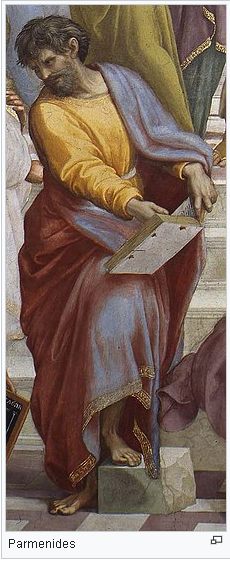

Parmenides
Parmanides , (Yunanca: Παρμενίδης, MÖ 515 - MÖ 460) Doğa filozoflarından sayılmakla birlikte, Antik Yunan felsefesinde rasyonalizm geleneğinin ilk filozoflarından biridir. Yalnızca düşünür olarak değil yasakoyucu ve devlet adamı olarak da rol oynadığı sanılmaktadır. Parmenides'e göre, evrende değişen hiçbir şey yoktur. Gerçeklik, yani Varlık, mutlak anlamda Bir'dir, kalıcıdır, süreklidir, yaratılmamıştır, yok edilemez; o ezeli ve ebedidir; onda hareket ve değişme yoktur. Herakleitos ile sürekli yaşadığı varlık ve evren hakkındaki tartışmalarıyla da ünlüdür
Felsefesi

Mantık diyalektik'in ilk kullanıcılarındadır. Felsefi görüşlerinde Anaximenes, Xenophanes ve Pythagoras'cıların etkileri olduğu görülür, ancak o daha çok kavramsal düşünmeye yönelmiştir. Logos ile sanıyı kavramlar üzerinden ayırmaya çalışır. Onun Bir'ci görüşü, bir takım mantıksal çıkarsamalarla evrende değişimin olmadığını kanıtlamaya çalışır. Gerçeklik ebedi ve değişmez olan, yaratılmamış ve yok edilemez olan, sürekli ve kalıcı olan Bir'dir. Varlık var olagelmiştir, parçalı değil bir bütündür, hareket ve değişim söz konusu değildir. Varlık hakkında söylenebilecek tek şey varlığın var olduğudur. Böylece ortaya özdeşlik ilkesi çıkmıştır. "Varlık var olandır, hiçlik ya da var olamayan var değildir" der Parmanides. Yalnızca var olan düşünülebilir ve var olmayan düşünülemez. Buna bağlı olarak da yaşadığımız dünyanın bir görünüşler dünyası olduğu, gerçek olmadığı önermesine varılır. Ontolojik düzlemde görünüş ile gerçeklik, epistemolojik düzlemde akılsal ile duyumsal olanın ayrıştırılması böylece ortaya konulmuş olunmaktadır. Onun geliştirdiği anlamda diyalektik, salt kavramlarla düşünme yöntemidir.
Parmenides'den günümüze Doğa Üstüne adında sadece fragmanları bulunan uzun şiiri kalmıştır. Parmenides bu şiirinin kendisine Tanrıça'nın hakikati ilhamı üzerine genç yaşta kaleme almıştır. Şiirinde Parmenides Tanrıça'nın katına yükseltildiğini ve dizelerini ondan aldığını söyler. Parmenides'in dönemindeki diğer yazarlarda da gökyüzüne yükselme veya cehenneme inişi teması sık görülmektedir. Eser iki bölüme ayrılmaktadır; ilk bölümde hakikat ikinci bölümde illüzyon dünyası ele alınır. Duyu dünyası yanılgı üretir. Görünenlerin ardında değişmeyen, sınırlanmayan, bölünmeyen bir şey bulunmaktadır ancak bu fenomenal dünyanın algısından doğrudan çıkarılamaz. Görünen fizik dünyanın gündelik algısı illüzyon üretir (Parmenides buna doxa der) dünyanın gerçekliği ise yukarıda sıfatları sayılan "Bir Varlığa" dayanır.
Parmenides'in Pisagor, Empedokles ve diğerleri gibi peygamber, büyücü ve şifacı olduğu, felsefesini mitoloji ve karışık mistik vizyonlarla edindiği ve dizelerle sunduğu söylenmiştir çünkü kendisi öne sürdüğü felsefeyi yer altı dünyasının Tanrıçası Tartaros'dan aldığını söylemiştir. Eserde Tanrıçanın şu ifadeleri de bunu göstermektedir:
"Hoşgeldin ölümsüz sürücülerin kendisiyle ilgilendiği ve yolculuğunda seni bulunduğumuz yere kısrakların taşıdığı genç adam. Bu yolda seni bekleyen kötü kader yok ve bu yol insanların genelinin hak ve adalet dışında çıktığı bir yol da değil. Burada her şeyi, içinde hiçbir doğru inancın olmadığı ölümlülerin hakikat ve görüşlerinin etrafında dolaştığı sarsılmaz kalbi bulacaksın."
Kaynakça
- Tam adı: Elealı Parmenides
- Çağı: Sokrates öncesi felsefe
- Bölgesi: Batı felsefesi
- Okulu: Elea Okulu
- İlgi alanları: Metafizik, ontoloji
- Önemli fikirleri: Determinizm